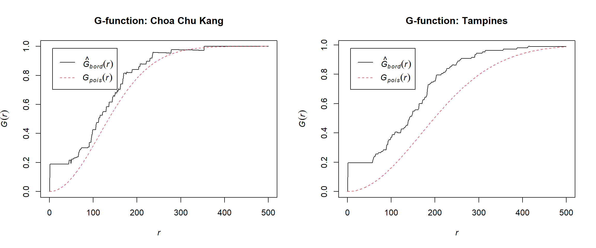
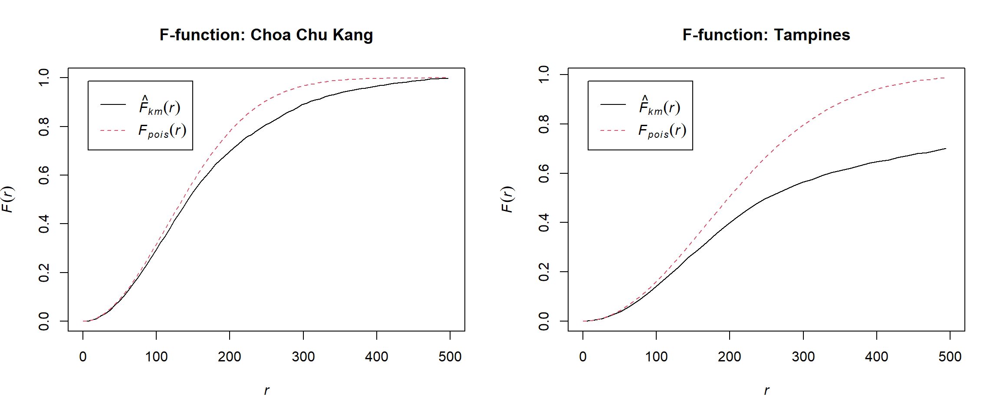
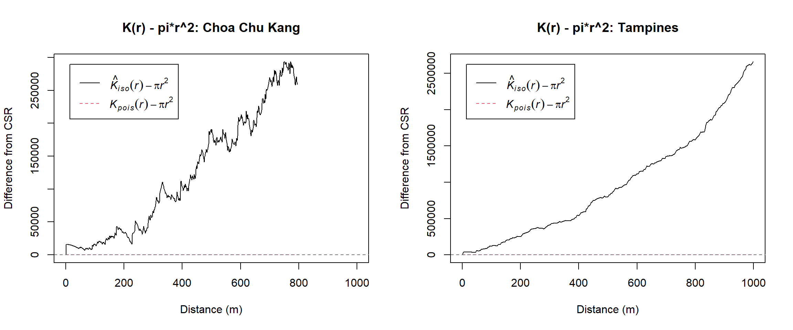
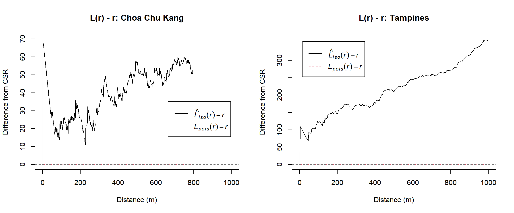
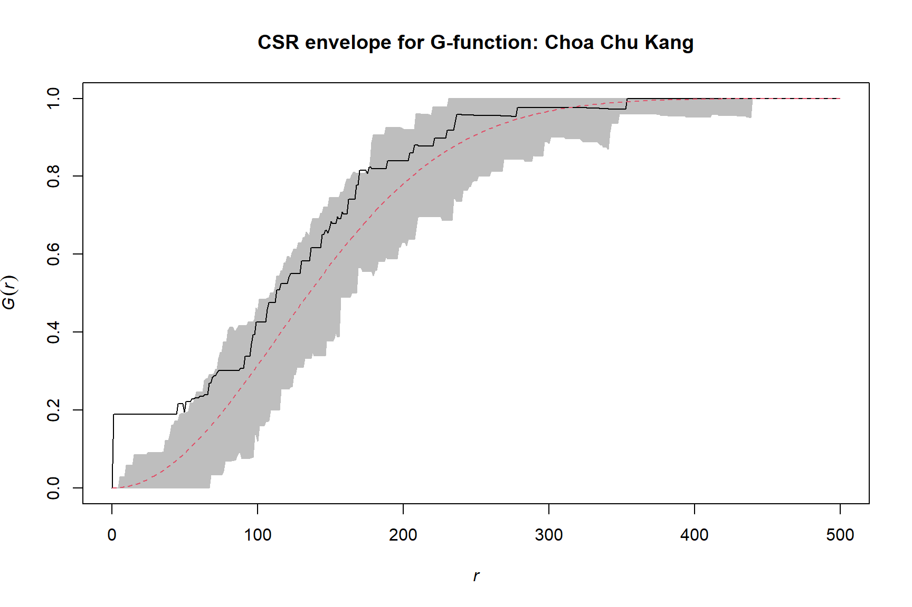
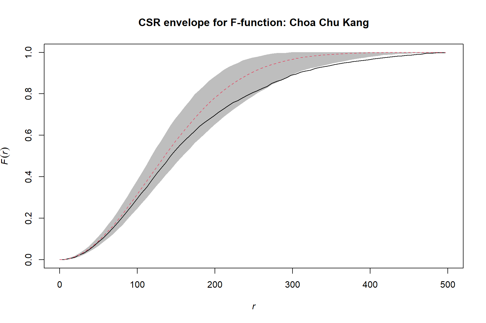
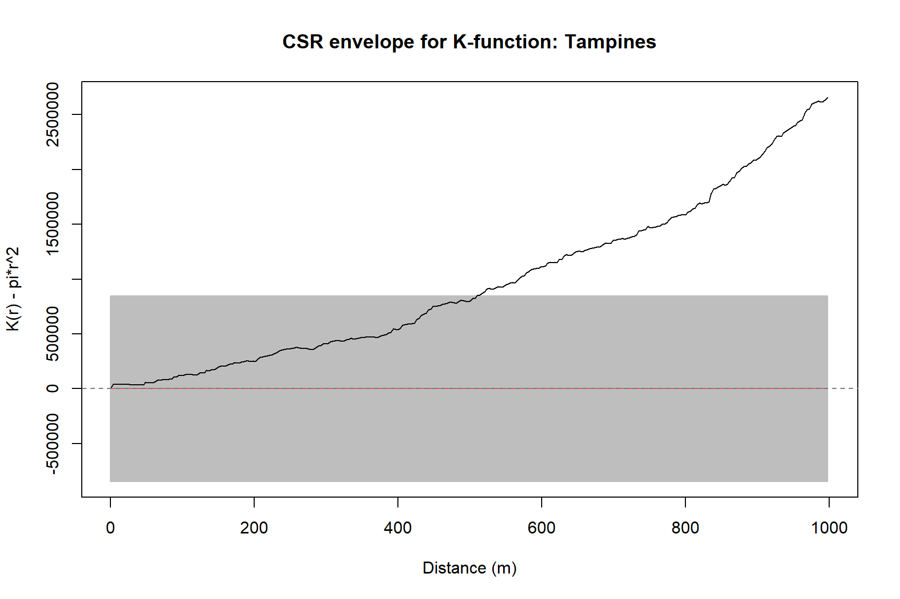
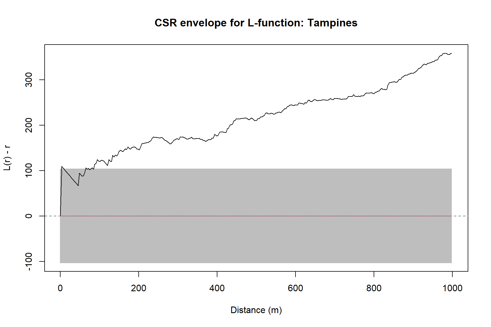

pacman::p_load(
sf,
spatstat,
tidyverse,
knitr
)Hands-on Exercise 2(2): Second-order Spatial Point Pattern Analysis
Overview
This exercise extends the first-order analysis by examining interactions among childcare-service locations over a range of distances. Second-order methods help determine whether an observed point pattern is more clustered or dispersed than expected under Complete Spatial Randomness (CSR).
The workflow follows Chapter 5: Second-order Spatial Point Patterns Analysis Methods. I apply the G, F, K, and L functions to childcare services in Choa Chu Kang and Tampines, then use Monte Carlo envelopes to compare selected results with CSR.
Learning objectives
By the end of this exercise, I should be able to:
- explain the different perspectives provided by G, F, K, and L functions;
- estimate second-order summary functions with spatstat;
- construct Monte Carlo simulation envelopes under CSR;
- compare observed and simulated curves across distance; and
- communicate whether a pattern is clustered, dispersed, or compatible with randomness.
Getting started
Loading the R packages
Data used
| File | Geometry | Purpose |
|---|---|---|
ChildCareServices.geojson |
Point | Childcare-service locations |
MasterPlan2019SubzoneBoundaryNoSea.geojson |
Polygon | Planning-area and subzone boundaries |
The same official datasets used in Exercise 2(1) are copied into this exercise’s own data/geospatial folder so that the page can be rendered independently.
Preparing the point patterns
mpsz_sf <- st_read(
"data/geospatial/MasterPlan2019SubzoneBoundaryNoSea.geojson",
quiet = TRUE
) |>
st_zm(drop = TRUE, what = "ZM") |>
st_make_valid() |>
st_transform(3414) |>
filter(
SUBZONE_N != "SOUTHERN GROUP",
!PLN_AREA_N %in% c("WESTERN ISLANDS", "NORTH-EASTERN ISLANDS")
)
childcare_sf <- st_read(
"data/geospatial/ChildCareServices.geojson",
quiet = TRUE
) |>
st_zm(drop = TRUE, what = "ZM") |>
st_transform(3414)make_area_pattern <- function(area_name) {
area_boundary <- mpsz_sf |>
filter(PLN_AREA_N == area_name) |>
summarise()
area_points <- childcare_sf |>
st_filter(area_boundary)
area_window <- as.owin(st_geometry(area_boundary))
area_xy <- st_coordinates(area_points)
area_ppp <- ppp(
x = area_xy[, "X"],
y = area_xy[, "Y"],
window = area_window,
checkdup = FALSE
)
list(
boundary = area_boundary,
points = area_points,
window = area_window,
ppp = area_ppp
)
}
cck <- make_area_pattern("CHOA CHU KANG")
tampines <- make_area_pattern("TAMPINES")
tibble(
planning_area = c("Choa Chu Kang", "Tampines"),
number_of_points = c(npoints(cck$ppp), npoints(tampines$ppp)),
area_km2 = c(area.owin(cck$window), area.owin(tampines$window)) / 1e6
) |>
mutate(area_km2 = round(area_km2, 2)) |>
kable(caption = "Point patterns used in the analysis")| planning_area | number_of_points | area_km2 |
|---|---|---|
| Choa Chu Kang | 74 | 6.12 |
| Tampines | 117 | 20.80 |
par(mfrow = c(1, 2))
plot(cck$ppp, main = "Choa Chu Kang", cols = "#0072B2", pch = 20)
plot(tampines$ppp, main = "Tampines", cols = "#D55E00", pch = 20)
par(mfrow = c(1, 1))Understanding the four summary functions
The functions answer related but distinct questions:
| Function | Measures | Typical clustering signal |
|---|---|---|
| G | Distance from an event to its nearest neighbouring event | Observed curve rises faster than CSR |
| F | Distance from a random location to its nearest event | Observed curve rises more slowly than CSR |
| K | Expected number of additional events within distance \(r\), adjusted for intensity | Observed K exceeds theoretical K |
| L | Variance-stabilised transformation of K | \(L(r)-r\) is above zero |
These interpretations should be made over distance ranges rather than from a single value.
G-function: nearest-event distances
G_cck <- Gest(cck$ppp, correction = "border")
G_tampines <- Gest(tampines$ppp, correction = "border")par(mfrow = c(1, 2))
plot(G_cck, main = "G-function: Choa Chu Kang", xlim = c(0, 500))
plot(G_tampines, main = "G-function: Tampines", xlim = c(0, 500))
par(mfrow = c(1, 1))When the observed G curve lies above the theoretical CSR curve, events tend to have shorter nearest-neighbour distances, suggesting clustering at those spatial scales.
F-function: empty-space distances
F_cck <- Fest(cck$ppp, correction = "km")
F_tampines <- Fest(tampines$ppp, correction = "km")par(mfrow = c(1, 2))
plot(F_cck, main = "F-function: Choa Chu Kang", xlim = c(0, 500))
plot(F_tampines, main = "F-function: Tampines", xlim = c(0, 500))
par(mfrow = c(1, 1))For a clustered pattern, random locations may be farther from the nearest event because the events are concentrated into groups and leave larger empty spaces between them.
K-function: cumulative interaction
K_cck <- Kest(cck$ppp, correction = "Ripley")
K_tampines <- Kest(tampines$ppp, correction = "Ripley")par(mfrow = c(1, 2))
plot(
K_cck,
. - pi * r^2 ~ r,
main = "K(r) - pi*r^2: Choa Chu Kang",
xlab = "Distance (m)",
ylab = "Difference from CSR",
xlim = c(0, 1000)
)
abline(h = 0, lty = 2, col = "grey45")
plot(
K_tampines,
. - pi * r^2 ~ r,
main = "K(r) - pi*r^2: Tampines",
xlab = "Distance (m)",
ylab = "Difference from CSR",
xlim = c(0, 1000)
)
abline(h = 0, lty = 2, col = "grey45")
par(mfrow = c(1, 1))Positive values indicate more neighbouring events within distance \(r\) than expected under CSR; negative values indicate fewer neighbours.
L-function: transformed K-function
L_cck <- Lest(cck$ppp, correction = "Ripley")
L_tampines <- Lest(tampines$ppp, correction = "Ripley")par(mfrow = c(1, 2))
plot(
L_cck,
. - r ~ r,
main = "L(r) - r: Choa Chu Kang",
xlab = "Distance (m)",
ylab = "Difference from CSR",
xlim = c(0, 1000)
)
abline(h = 0, lty = 2, col = "grey45")
plot(
L_tampines,
. - r ~ r,
main = "L(r) - r: Tampines",
xlab = "Distance (m)",
ylab = "Difference from CSR",
xlim = c(0, 1000)
)
abline(h = 0, lty = 2, col = "grey45")
par(mfrow = c(1, 1))The L transformation makes the CSR reference line equal to zero, which often makes departures from randomness easier to interpret.
Monte Carlo tests of CSR
A simulation envelope represents the range of summary-function values generated by random point patterns in the same window. An observed curve outside the envelope provides evidence against CSR at the corresponding distance.
For a published or assessed analysis, more simulations produce a more precise envelope. I use 39 simulations here to keep the website reproducible within a reasonable rendering time; this can be increased to 99 or 999 for a more rigorous test.
G-envelope for Choa Chu Kang
set.seed(1234)
G_cck_csr <- envelope(
cck$ppp,
fun = Gest,
correction = "border",
nsim = 39,
rank = 1,
verbose = FALSE
)plot(
G_cck_csr,
main = "CSR envelope for G-function: Choa Chu Kang",
xlim = c(0, 500),
legend = FALSE
)
F-envelope for Choa Chu Kang
set.seed(1234)
F_cck_csr <- envelope(
cck$ppp,
fun = Fest,
correction = "km",
nsim = 39,
rank = 1,
verbose = FALSE
)plot(
F_cck_csr,
main = "CSR envelope for F-function: Choa Chu Kang",
xlim = c(0, 500),
legend = FALSE
)
K-envelope for Tampines
set.seed(1234)
K_tampines_csr <- envelope(
tampines$ppp,
fun = Kest,
correction = "Ripley",
nsim = 39,
rank = 1,
global = TRUE,
verbose = FALSE
)plot(
K_tampines_csr,
. - pi * r^2 ~ r,
main = "CSR envelope for K-function: Tampines",
xlim = c(0, 1000),
xlab = "Distance (m)",
ylab = "K(r) - pi*r^2",
legend = FALSE
)
abline(h = 0, lty = 2, col = "grey45")
L-envelope for Tampines
set.seed(1234)
L_tampines_csr <- envelope(
tampines$ppp,
fun = Lest,
correction = "Ripley",
nsim = 39,
rank = 1,
global = TRUE,
verbose = FALSE
)plot(
L_tampines_csr,
. - r ~ r,
main = "CSR envelope for L-function: Tampines",
xlim = c(0, 1000),
xlab = "Distance (m)",
ylab = "L(r) - r",
legend = FALSE
)
abline(h = 0, lty = 2, col = "grey45")
Interpretation guide
The four functions should be interpreted together:
- an observed G curve above the envelope supports short-distance clustering;
- an observed F curve below the envelope supports larger empty spaces associated with clustering;
- K or L curves above their upper envelopes indicate more neighbours than expected at the relevant distance; and
- curves remaining inside the envelopes are compatible with CSR at those distances.
These results describe spatial structure but do not explain its cause. Population distribution, land use, transport accessibility, and planning policy may all influence childcare locations and would require additional data to assess.
Reflection
Second-order analysis adds a distance dimension that cannot be seen from a point map or a single nearest-neighbour statistic. It also makes the role of the study window and edge correction especially important. Comparing several summary functions gives a more balanced interpretation than relying on one curve alone.